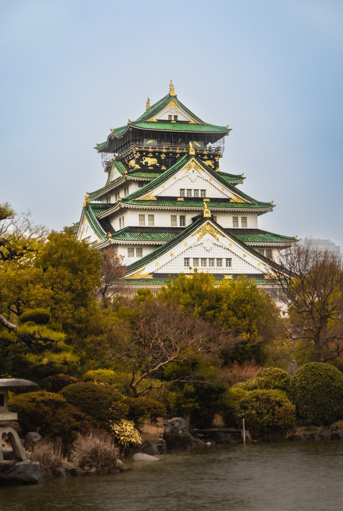
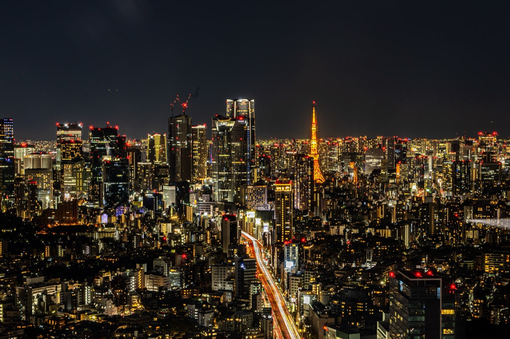

Japan
Osaka, Kyoto, Mt. Fuji, Tokyo, Hokkaido
2025.1
Photographs






The guide for this country is not written yet.
Back to destinationsOsaka, Kyoto, Mt. Fuji, Tokyo, Hokkaido
2025.1


The guide for this country is not written yet.
Back to destinations